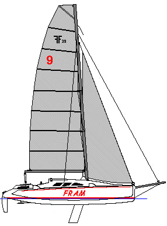
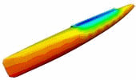
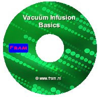

<div class="container">
  <div class="home layout-content">
    @include('aside.html')
    <div class="home__content content">
      @include('articlePreview.html')
      <h2>FRAM, my F-39 Trimaran</h2>
      <p>Hello and thank you for showing interest in my web site.</p>

      <picture>
        <source srcset="" type="image/webp">
        
      </picture>

      <p>As a result of a lifetime in keelboats, it became high time for a new challenge; sailing and racing a fast ocean going trimaran. This website is dedicated to the building of this boat, the Ian Farrier designed F-39 trimaran.</p>
      <p>In my view, challenges - and dreams - keep people going. It doesn't matter if it is about the house with a white picket fence, a fast sports car in the garage or other goals one is going for. In my leisure time it is a 39 foot trimaran moored dockside, and a yearning for new adventures.</p>

      <h2>Building myself</h2>
      <p>There are more good reasons to buy a new and ready-to-go-yacht, or a custom made or second hand boat, than taking up the challenge and build the boat from scratch yourself. One of the good reasons to do it yourself is when you know you will maintain the best possible quality. One of the bad reasons is money. It is an aspect indeed, but in reality it is cheaper to buy a used boat.</p>
      <p>On the other hand, such a building project is a tremendous source of energy and motivation, and the satisfaction of finishing such a project with a high tech yacht as result is glorious. I did it before, but smaller and a long time ago, and I liked it. Read the FAQ-section of this site for more reflections about this subject.</p>

      <h2>Method</h2>
      <p>Nowhere does the romance of boat building stray farther from the reality of boat building than it does in a fiberglass boat. I had only woodworking capabilities and my affecting with composite structures was almost none. While my quality demands are high, I did not look forward to laminate large surfaces with relative thin layers of a sticky mix of glass and epoxy. When I studied the various building methods, I found out that vacuum bagging was a method to improve the quality of the hand-lay-up laminate. But the problem with vacuum bagging large components (like a boat hull) is how to do this within the gel time of the resin. And then there are nasty health aspects, as epoxy is not a human friendly material. The idea of a large wet layup done by hand with a squeegee just freaks me out.</p>

      <h2>Vacuum Resin Infusion</h2>
      <p>At the end of the last century I did my research on the modern high tech composite materials, which were all new for me. This has resulted in the adoption of the Controlled Vacuum Infusion Technique. In that time this laminating technique was new and just a few shipyards were using this new technique in only an experimental stage. Using the technique for an one-off amateur build project was unusual and getting the right information and knowledge was quite laborious. Nevertheless, for me this led to a building method with which I am able to create high quality composite constructions in a controlled and repeatable way, and single handed, while eliminating the sticky, messy, smelly handling of resins. With this process I lay up everything dry, and only have to deal with resin at the very end. The result is a no-voids, tightly packed lay up. And, last but not least, this has helped me to overcome my pre-justice against "plastic boats". But it is certainly not a "quick and dirty job", as sometimes seen in composite works. On the contrary, one needs a patient and meticulous mode of thought.</p>

      <picture>
        <source srcset="" type="image/webp">
        
      </picture>

      <p>The general acceptance of vacuum infusion in the professional building scene has been slow, among other aspects also because of the supposed risks involved. This is correct when applied as a trial and error based method. These days you can see new yards adopting the technique rapidly, while "settled" building yards are waiting to see which way the cat is going to jump. Nevertheless, vacuum resin infusion continues to be the hot topic in boatbuilding today, and while many builders have already switched to it very successfully, many more are still weighing up the pros and cons of such a bold change of practice.</p>

      <h2>Virtual boatbuilding</h2>
      <p>It became possible to use the infusion technique by me as part-time and one-off builder. There are more builders who were experimenting with infusion techniques, but in that time nobody wass injecting complete hulls, in- and outside, without a mould and direct to the foam core. For me this became possible by the planking method of vertical foam stripping, where the lengths of joins is minimized to an amount which is not too difficult to make airtight. But the main reason why I am able to do this is the use of Virtual Boatbuilding, responsible for the word "Controlled" in the term Controlled Vacuum Infusion. Flow simulation software makes it possible to eliminate the guesswork and to resolve the errors in the flow process first in de computer before doing the real infusion in the hull. Read more in the workshop section of this site.</p>

      <h2>DIY Starter Kit and CD</h2>

      <picture>
        <source srcset="" type="image/webp">
        
      </picture>

      <p>The construction of my project is finished so that I no longer have materials available to supply the starters kit. That is why I decided to discontinue the availability of the Vacuum Infusion Starter Kit.</p>
      <p>However, the data on the CD is still available and contains a wealth on information about the infusion process, how to do it and what materials are required, cleared up with photo's and videos. A successful infusion is in the details.</p>

      <picture>
        <source srcset="" type="image/webp">
        
      </picture>

      <a href="#">Learn more</a>

      <h2 style="margin-top: 40px;">Full Instruction Package now available</h2>

      <picture>
        <source srcset="" type="image/webp">
        
      </picture>

      <p>I've had great success with the vacuum infusion of my F-39 Trimaran. It has resulted in a high quality lightweight boat on which I'm very proud. As the quality of my infusion strategy has now been well proven for the professional as well as the amateur builder, now is the time to make my thoroughly thought out infusion plans available for other interested builders.</p>

      <a href="#">Learn more</a>

      <h2>Website</h2>

      <p>Among other things this site was created for following this building project, in particular for family and friends, but also in a hope that others may be inspired to transform dreams into plans. I like this way of sharing my experience, which has resulted in this now very popular website and a lot of contacts and feedback from others. That's nice and very motivating! Taking photo's and writing up of what I was doing turned out to be invaluable and because of that is motivating in its own right.</p>
      <p>I will be adding to this site periodically. Be patient though. It is a part-time project and I work in spurts and bursts, not steadily. So don't expect daily updates. There are still too many deadlines in my humble life and I don't stand in need of creating more. I will bring this website up to date with the latest developments, when time permits. Please come back and visit again. Don't forget to click the REFRESH button on your browser to get the latest upload (all pages!).</p>

      <h2>Website compatibility</h2>

      <p>My "old" website, written with MS Frontpage and without style sheets, has lasted more than 15 years but was therefore also very outdated. But at least it appeared in all versions of Internet Explorer the way I had intended.</p>

      <picture>
        <source srcset="" type="image/webp">
        
      </picture>

      <p>This “new” website, published in February 2019, replaces the former old-fashioned style with a new, fresh and modern look, at least I hope so. However, IE is a notorious bad browser concerning the compatibility with CSS. At first it gave me a lot of headache but realizing that IE is technically no longer going to be supported in the future and Edge has taken over as Microsoft’s flagship browser, made me decide to stop my efforts in trying to make fram.nl IE compatible.</p>
      <p>Sorry for that. It helps making your screen not smaller than 1000px.</p>
      <p>Other browsers should pose no problem.</p>
      <p>On the other hand, although not designed specifically for mobile users, I have now made fram.nl responsive to different screen widths and should therefore be easily readable on tablets and smartphones.</p>
      <p>Please, if you encounter any problems, let me know.</p>

      <picture>
        <source srcset="" type="image/webp">
        
      </picture>

      <p>English is not my mothers language and writing the correct things I want to share with you is time consuming. I do my best to do it right, but cannot anticipate on mistakes in grammatical and vocabulary. I hope you don't mind! (please give me a hint when it is extremely wrong).</p>

      <h2>Navigation</h2>

      <p>This site have many interesting areas to explore, so please enter the menu items in the top of this page to guide you through the site. They bring you to the building project and other pages. The left side of most pages are provided with a table of contents which are also short cuts to the relevant subjects. I have include some pages about my previous yachts and some sailing stories. The "About" menu might be of interest to understand the meaning of all this. Most graphics and photos are links and you can either magnify the image by clicking on it or the click will bring you to an extensive image gallery. With the home-link you always return to this page. For some more entertaining take a break with this nautical humor page.</p>
      <p>Besides using the menu at the top of each page you can also give yourself a complete tour by following the "next" button at the bottom of each page.</p>

      <picture>
        <source srcset="" type="image/webp">
        
      </picture>

      <p>With the sitemap you can get a quick overview over the entire Fram website. I appreciate your comments in <a href="#">my guestbook.</a></p>
      <p>Another way of exploring my project is through my Blog where you can search by subject in categories or tags or take a chronological sequence through the archives. I use the Blog especially for the topicality and announcement of new content and updates</p>
      <p>Some subjects are also extensively covered on the Dutch <a>Sailors Forum.</a></p>
      <p>Feel free to <a>drop me a line</a> if you have specific questions.</p>

      <h2>Have Fun !</h2>

      <p>Henny van Oortmarssen</p>

      <picture>
        <source srcset="" type="image/webp">
        
      </picture>

      <p>This website is always under construction !</p>


      <!-- @include('./gallerySection.html') -->

      <!-- @include('./videoSection.html')  -->

    </div>
  </div>
</div>
